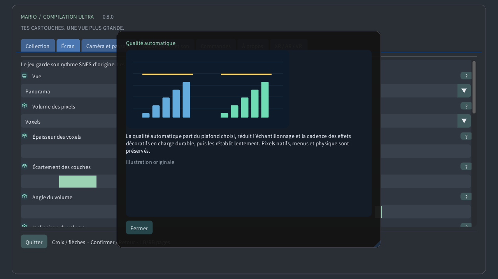

Choisis une cartouche locale, lance un jeu ou ouvre son guide. Les téléchargements publics ne contiennent ni les jeux ni tes sauvegardes.
Original garde l’écran de la console. Panorama l’étend. L’atlas cadre le terrain disponible ; Carte entière lit toute la zone chargée lorsque son décodage est pris en charge, même inexplorée. Une porte peut changer de zone.
Choisis ce que suit la vue : caméra originale, personnage ou position fixe. Le cadrage change sans déplacer le personnage ni activer les ennemis éloignés.
Le zoom change la portion visible. Sur montre, 0 % montre toute la carte chargée et 100 % rejoint la caméra originale. La vitesse du jeu reste identique.
Sur une montre ronde, la lentille déforme tout le rectangle du jeu en cercle. Les bords restent visibles. Commandes et textes restent plats ; désactive-la pour un rectangle sans déformation.
La couronne ou lunette détectée règle le zoom en partie et fait défiler les menus. La sensibilité règle l’amplitude ; Inverser échange les sens. Le zoom tactile fonctionne sans couronne.
Pixels proches conserve les contours bruts. Net les garde précis aux tailles non entières. Doux adoucit l’agrandissement. L’image source et les collisions restent identiques.
Pixels carrés respecte la forme des pixels source ; TV 4:3 donne les proportions d’un téléviseur. Monde pixel conserve des pixels carrés et un zoom entier.
La qualité automatique part du plafond choisi, réduit l’échantillonnage et la cadence des effets décoratifs en charge durable, puis les rétablit lentement. Pixels natifs, menus et physique sont préservés.
La réserve garde une part du temps de chaque image pour les imprévus. Une réserve plus grande favorise la fluidité. Très fluide utilise 40 % ; Quest garde au moins 35 %. La qualité remonte quand la marge le permet.
L’état thermique local d’Android peut réduire les détails décoratifs avant que la chauffe augmente. Aucune permission ni connexion n’est nécessaire. Le système contrôle toujours les fréquences réelles.
La synchronisation suit l’écran pour limiter les déchirures. Le jeu garde son horloge originale. Quest utilise la fréquence choisie du casque ; la réserve est calculée à cette fréquence.
CRT léger garde l’aspect rétro avec moins de calculs. Automatique commence léger et autorise la référence après une marge GPU mesurée durable. Référence impose le calcul plus coûteux.
Choisis la fenêtre, l’écran ou le plein écran. Ces options changent l’emplacement de l’image, sans modifier le niveau chargé ni ses sauvegardes.
Le fond remplit l’espace autour du jeu. Paysage doux reprend ses couleurs ; Minuit et Noir donnent un cadre plus sobre. Flou et luminosité agissent sur ce fond.
Le flou adoucit le paysage autour du jeu ; la luminosité règle sa clarté. L’image native reste intacte. En charge, la qualité automatique peut rafraîchir ce décor moins souvent.
Les raccords doux fondent l’extension dans le fond près de la caméra originale. Désactive-les pour une limite franche. La carte entière conserve son cadrage complet.
Le repère indique le personnage ; le guide encadre la caméra originale ; la minicarte situe cette caméra. La vue rapprochée garde l’écran natif lisible quand la carte est éloignée.
Les aperçus montrent des placements vérifiés ou des apparences observées localement. Objets estompés et contours sont des guides, pas des ennemis actifs supplémentaires. Opacité et étiquettes règlent leur visibilité.
Choisis le coin, la taille, l’opacité et la durée des rappels. Un délai nul garde le rappel visible. Ces indications ne changent ni le jeu ni sa caméra.
Règle la langue, la taille ou le contraste des menus pour lire confortablement. Les guides illustrés sont disponibles hors ligne. Le rendu et la langue de la cartouche sont indépendants.
Choisis la correspondance des boutons et les zones mortes. Une zone plus grande ignore davantage de petits mouvements. Les commandes rapides ajoutent des raccourcis caméra ; les actions normales restent disponibles.
Les boutons tactiles acceptent plusieurs doigts simultanés. Automatique les montre sans manette. Disposition, taille, opacité et côté changent les commandes, pas la physique du jeu.
Maintiens la commande choisie pour remonter les états récents exacts. La durée dépend de la mémoire et de la cartouche. Son inversé et indicateur sont facultatifs ; les sauvegardes disque sont séparées.
Un emplacement conserve l’état actuel de la machine. Charger y revient ; la reprise automatique utilise son propre emplacement. La progression de cartouche est distincte. Remplacer un emplacement demande confirmation.
Volume et silence règlent la lecture locale. Ils ne changent pas la vitesse du jeu et n’effacent aucune sauvegarde. Le son du retour arrière se règle séparément.
La pause relâche les commandes maintenues. Les options de focus et de suivi règlent les pauses automatiques. Reprendre garde la partie ; quitter enregistre la progression de cartouche.
Choisis écran flottant, mur, atlas au sol, table arcade, pièce CRT ou écran courbe. La même partie continue ; seul son affichage dans l’espace change.
Taille, distance, hauteur, inclinaison et écart placent l’objet virtuel dans la pièce. Les valeurs utilisent les unités affichées. Recentrer le remet à portée sans relancer le jeu.
Le placement automatique utilise les données de scène autorisées si disponibles. Un placement verrouillé ou enregistré garde le lieu choisi. Une perte de suivi peut mettre en pause ; le placement manuel reste accessible.
Télécommande virtuelle, mains et toucher direct commandent le même jeu. Taille et rappels règlent leur confort. L’intensité haptique change le retour, sans modifier le moment des actions.
Les réglages CRT ajoutent balayage, masque RVB, verre courbe et reflets. Plus d’intensité est un choix visuel, pas du détail de jeu supplémentaire. La qualité automatique peut simplifier ce décor coûteux.
La transparence AR montre ta pièce réelle ; l’environnement virtuel sert de décor sinon. Transparence, paysage périphérique et luminosité règlent ce qui entoure le jeu.
Les détails du canevas et des yeux règlent les plafonds de couches distinctes. La qualité automatique les ajuste si nécessaire. Le menu indépendant reste net ; la fovéation périphérique est facultative si prise en charge.
Utilise le point d’interrogation pour une explication illustrée. Survol et focus manette donnent un aperçu ; le toucher ouvre la fiche. Les illustrations sont des exemples originaux, pas des captures de cartouche.
La qualité manuelle désactive l’adaptation et conserve le niveau de détail choisi. Qualité automatique rétablit l’adaptation ; Très fluide garde davantage de réserve de performance.
Sur un Quest compatible, une charge durable peut réduire les détails périphériques tout en préservant le centre. Les menus gardent une couche nette distincte. Le rendu ordinaire prend automatiquement le relais si nécessaire. La qualité en casque reste à tester.
3D procédurale facultative : les pixels deviennent des colonnes solides, avec terrain, décors et personnages sur des plans distincts. Le relief est léger ; les voxels sont plus épais. L’épaisseur règle la profondeur et l’angle règle la vue sur écran. La qualité automatique réduit le détail sous charge. HUD et gros plans gardent les pixels originaux. Les scènes spéciales reviennent à l’écran original. Il s’agit d’une interprétation, pas d’une reconstruction des faces cachées. Les performances physiques restent non testées. Les formes arrondies génèrent des corps en gradins à partir de la transparence des personnages ; désactivées, l’extrusion reste uniforme. L’inclinaison règle l’élévation de la vue sur écran. Les positions et la physique du jeu restent inchangées. L’écartement sépare les couches en profondeur sans changer leur ordre.